library(tidyverse) # Easily Install and Load the 'Tidyverse'
library(vegan) # Community Ecology Package
library(ggrepel) # Automatically Position Non-Overlapping Text Labels with 'ggplot2'
library(SpadeR) # Species-Richness Prediction and Diversity Estimation with R
library(BiodiversityR) # Package for Community Ecology and Suitability Analysis
library(iNEXT) # Interpolation and Extrapolation for Species Diversity
library(hillR) # Diversity Through Hill Numbers
library(MuMIn) # Multi-Model Inference
library(ggeffects) # Create Tidy Data Frames of Marginal Effects for 'ggplot' from Model Outputs
library(DHARMa) # Residual Diagnostics for Hierarchical (Multi-Level / Mixed) Regression Models
library(performance) # Assessment of Regression Models PerformanceIntrodución al análisis de diversidad taxonómica
Introducción a conceptos y análisis de la diversidad taxonómica con cámaras trampa.
La diversidad de especies
La diversidad de especies es una de las medidas más comunes e importantes en la ecología, pero así mismo difícil de cuantificar. La importancia en la cuantificación de la diversidad taxonómica ha resultado en que en la última década se hayan generado grandes avances (Jost 2006a; Chao and Jost 2012; Chao et al. 2014). Tanto que a veces parece abrumador la cantidad de indices, estimadores y maneras en la que se evalúa la diversidad. Tranquilo, hoy vamos a intentar aprender el cómo y porqué de algunas de las aproximaciones más comunes para cauntificar la diversidad taxonómica de especies.
Paqueterias
La riqueza de especies
La riqueza o el número de especies es la medida más sencilla de diversidad. Cualquiera que haya visto algún curso de ecología de comunidades se habrá embarcado en la aventura de medir y comparar la riqueza de especies. Es muy sencillo: cuantas especies hay en determinado espacio y tiempo, ¿Qué podría salir mal?
A pesar de ser una métrica muy intuitiva de la comunidad, la riqueza de especies también es difícil de medir. ¿Porque?. Resulta que cuando salimos a campo, ponemos nuestras cámaras y obtenemos nuestros datos, lo que realmente tenemos es una muestra de las especies detectadas. Pero no necesariamente todas las especies de la comunidad.
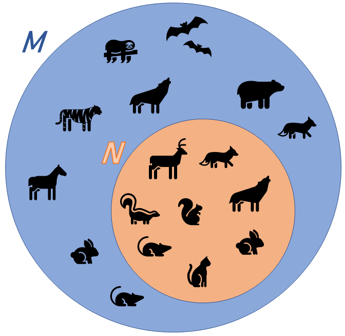
Estimar la riqueza
Para conocer la riqueza real necesitamos saber cuantas especies aun no han sido detectadas
\[ Riqueza-real= riqueza-registrada+riqueza-no-detectada \]
Curvas de rarefacción
Las curvas de rarefacción se basan en las curvas de acumulación de especies. La lógica de las curva de acumulación es tomar un individuo al azar de la muestra y registrar la especie. Repetimos el proceso varias veces, y en cada ocasión vamos agregando nuevas especies o no. Lo que esperaríamos es que a medida de que tomamos mas unidades de muestreo o individuos tendremos más especies hasta el punto en donde a pesar de agregar más individuos o sitios de muestreo no tendremos más especies. En ese punto alcanzaremos la asintota de la riqueza. Estas curvas nos pueden dar información muy interesante sobre la comunidad. Por ejemplo, una curva que que tenga una pendiente muy pronunciada nos habla de una comunidad con especies con distribución de la abundancia similar. Mientras que una curva con una pendiente que cae rápidamente sugiere que la comunidad esta dominada por ciertas especies (Gotelli and Colwell 2011).
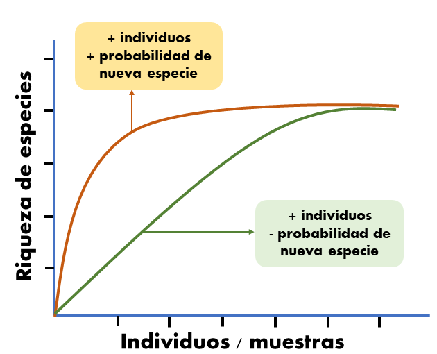
En teoría podemos agregar individuos o muestras hasta que ya no se detecten nuevas especies, es decir que, se llega a la riqueza asintótica. Sin embargo, en la realidad no siempre tenemos la capacidad logística para llegar hasta la asíntota (especialmente en los trópicos y dependerá del grupo de organismos).
Un limitante de las curva de acumulación es que su pendiente puede variar dependiendo del orden en que se agregan los individuos, así que una solución es la rarefacción. Básicamente la rarefacción es un re-muestreo sin remplazo, donde se van tomando individuos al azar y se registra cada especie. Esta técnica permite también obtener intervalos de confianza al 95% lo que permite hacer comparaciones de la riqueza de especies de dos comunidades con distintas abundancias de individuos (siempre y cuando sean los mismos organismos y los mismos métodos).
Vamos a generar nuestras curvas de rarefacción usando las funciones de vegan (Oksanen et al. 2020).
Cargar datos
Vamos a cargar datos de cámaras trampa que obtenemos a partir de camtrapR. Debido a que los datos consideran humanos y otros grupos como aves o reptiles, vamos a filtrar las especies que nos interesan.
# Registros con independencia de 15 min
registrosD15 <- read.csv("Data/events_by_station_d15.csv") %>% filter(Species %in% c("Bassariscus astutus", #filtro de especies
"Canis latrans",
"Conepatus leuconotus",
"Dicotyles angulatus",
"Herpailurus yagouaroundi",
"Lynx rufus",
"Mephitis macroura",
"Nasua narica",
"Odocoileus virginianus",
"Procyon lotor",
"Puma concolor",
"Spilogale angustifrons",
"Sylvilagus floridanus",
"Urocyon cinereoargenteus"
))
CT_table <- read.delim("Data/CT_cams.txt")Vamos a realizar una pequeña gráfica para darnos una idea de como se distribuye la riqueza de especies en nuestra área de estudio. Hay que hacer un poco de carpintería de datos:
N_spec <- registrosD15 %>% #los datos
filter(n_events > 0) %>% # filtro solo sitios con detecciones
group_by(Station) %>% #agrupamos por cámara
tally() %>% # Contamos las especies por cámara
left_join(CT_table) %>% #agregamos las coordenadas
select(Station, utm_x, utm_y, n) #seleccionamos columnas
ggplot(N_spec, aes(x= utm_x, y=utm_y))+
geom_point(aes(size=n, col=n),
alpha= 0.8)+
scale_size(range = c(1,15))+ # Escala del radio para los puntos
labs(title= "Mapa de número especies",
y= "Lat",
x= "Lon",
size= "Número de \nespecies",
col=NULL)+
theme_bw()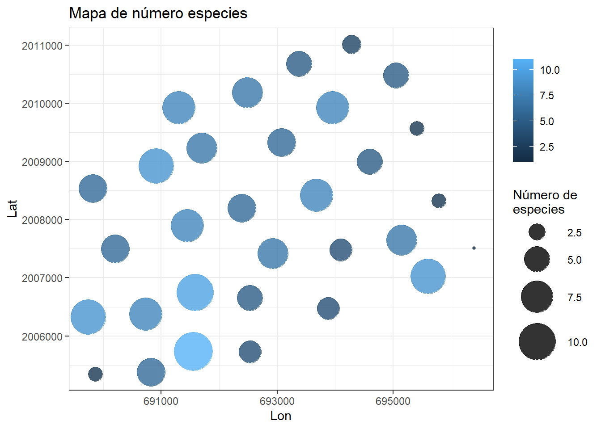
Ahora vamos por las curvas. Primero tenemos que hacer más carpinteria de datos para ajustar el formato que requiere la función specaccum. Básicamente necesitamos una matriz donde las especies sean las columnas y las filas, cada una de las unidades de muestreo.
ac_data <- registrosD15 %>% # datos
pivot_wider(names_from = Species, # nuevas columnas
values_from = n_events) %>% # valores
column_to_rownames(var= "Station")# columna a nombre de filas
# Función de vegan specaccum para las curvas de acumulación
sample <- specaccum(ac_data, # datos
method = "random", # basado en muestreo
permutations = 100)[c(3,4,5)] %>% #seleccionar objetos de la lista
reduce(bind_cols) %>% # Unirlos en un data.frame
rename(Sitios= "...1", # Renombrar columnas
Riqueza= "...2",
SD= "...3")
indi <- specaccum(ac_data,
method = "rarefaction", # basado en individuos
permutations = 100)[c(4,5,7)] %>%
reduce(bind_cols) %>% # Unirlos en un data.frame
rename(Riqueza= "...1", # Renombrar columnas
SD= "...2",
Individuos= "...3")
# Grafica de las curvas
ggplot(sample, aes(x=Sitios, y=Riqueza,
ymin= Riqueza-SD,
ymax= Riqueza+SD))+
geom_ribbon(alpha=0.5)+
geom_line(size=1)+
labs(title = "Curva de rarefaccion basada en muestreo",
y= "Riqueza acumulada",
x= "Unidades de muestreo")+
theme_bw()
ggplot(indi, aes(x=Individuos, y=Riqueza,
ymin= Riqueza-SD,
ymax= Riqueza+SD))+
geom_ribbon(alpha=0.5)+
geom_line(size=1)+
labs(title = "Curva de rarefaccion basada en individuos",
y= "Riqueza acumulada",
x= "Individuos")+
theme_bw()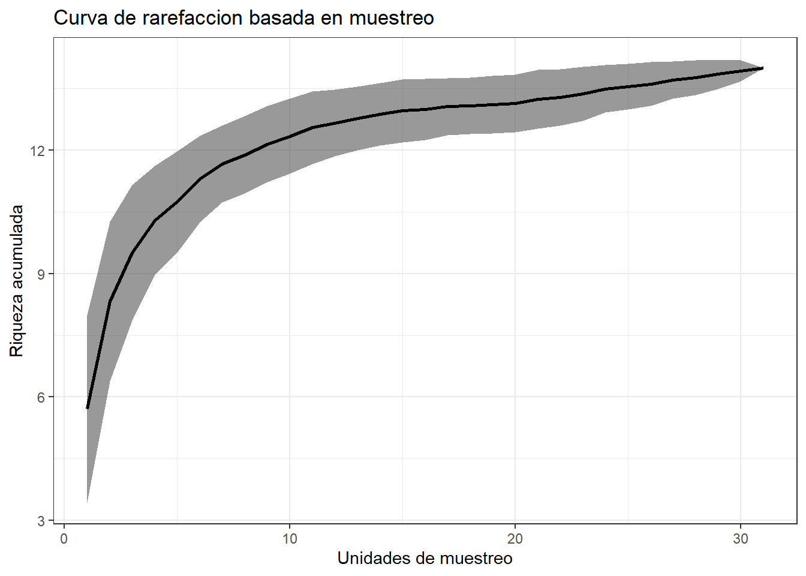
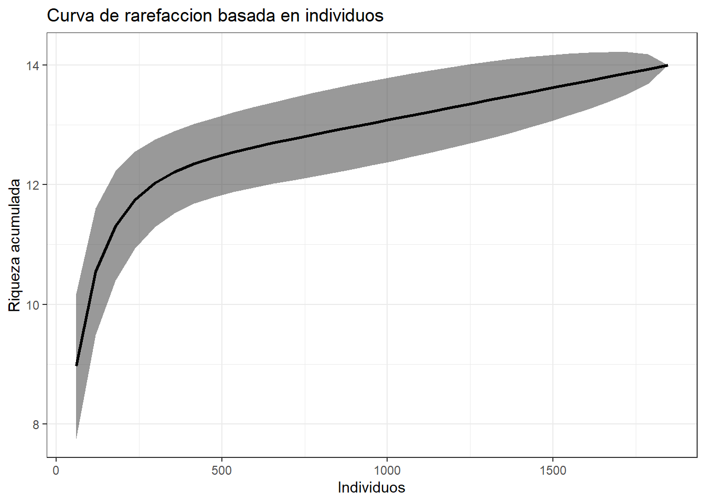
Supuestos de las curvas para comparar comunidades
El poder para detectar diferencias estadísticas requiere suficiente información. En el caso del fototrampeo al menos se ha detectado que con 30 a 60 días de muestreo con 25 a 60 cámaras es suficiente para recuperar la riqueza de especies (Kays et al. 2020).
Diferentes métodos pueden tener capacidades disintitas para detectar ciertas especies, por lo cual es peligroso comparar comunidades diferentes mediante métodos de muestreo diferentes. Pese a ello, autores han usado esta técnica para compara la eficacia de métodos sobre la misma área. También se han conjugado diferentes métodos para maximizar la detección de especies, pero si se comparan otro sitio se deben usar las mismas especificaciones (Gotelli and Colwell 2011).
Las comunidades que se comparan deber ser de especies taxonómicamente similares.
La comunidad debe ser “estable” al menos durante el muestreo. Además, las especies deben ser organismos plenamente identificados y cuantificables.
Muestreo aleatorio con unidades independientes.
Estimadores no paramétricos
Los estimadores no paramétricos son quizás los más usados para estimar la riqueza de especies. El termino no parmétrico se refiere a que estos estimadores no requieren ajustarse ningún modelo teórico .(Pineda-López 2019). Dado que los estimadores paramétricos han demostrado tener complicaciones al estimar la riqueza, los no estimadores no paramétricos se han vuelto los consentidos(Gotelli and Colwell 2011).
Podemos usar diferentes estimadores dependiendo si nuestros datos son de incidencia (frecuencia) o de abundancia. Si tienes de abundancia, siempre se puede convertir en incidencia, pero no viceversa (Gotelli and Colwell 2011) .
Incidencia: Chao2, ICE, Jacknifes de incidencia y bootstrap
Abundancia: Chao1, ACE, Jacknifes de abundancia
Por espacio no pondré las formulas de cada estimador, pero es bueno que cada quien las consulte (Gotelli and Colwell 2011; C. Moreno 2001).
Básicamente estos estimadores corrigen la riqueza observada (Sobs) mediante las especies que solo son representadas por un individuo (singletons) o dos (doubletons) en el caso de datos de abundancia. Para incidencia especies con frecuencia uno (uniques) y (duplicates). ¿Cómo lo hacen? estos estimadores se basan el principio de la ecuación de Turing y Good (Good 1953), es decir que, las información de las especies más raras puede ser usada para estimar cuantas especies faltan.

Vegan
Vamos a calcular estos estimadores usando las funciones de vegan (Oksanen et al. 2020). El mismo vegan tiene funciones de plot y summary utiles para resumir la información. Sin embargo, como tengo más habilidades con ggplo2, lo que haremos será carpintería de datos para poder gratificarlo como queremos
columnas <- c("N", "S", "2.5%", "97.5%", "Std.Dev") # Cambiiar los nombres de las columnas en incidencia
incidence <- poolaccum(ac_data, permutations = 100) %>%
summary() %>% #Generar el resumen
map(as.data.frame) %>% # Hacer cada objeto un data.frame
map(., setNames, nm = columnas) %>% # Cambiar nombres
reduce(bind_rows) %>% # Unir todo en un data.frame
mutate(Estimador= rep(c("S", "Chao", "Jack1", "Jack2", "boot"),
each= 29)) %>% # Agregar una columna con
mutate_if(is.numeric, round, 2) #Redondear a dos cifras
# Con los de abundancia es más sencillo
abundance <- estaccumR(ac_data, permutations = 100) %>%
map(as.data.frame) %>% # Hacer cada objeto un dataframe
.[["means"]] %>% # Seleccionar solo las medias
pivot_longer(cols = S:ACE, # Cambiar a formato largo
names_to = "Estimador",
values_to = "S") %>%
mutate_if(is.numeric, round, 2)
ggplot(incidence, aes(x=N, y=S, col= Estimador))+
geom_line(size=1)+
scale_y_continuous(sec.axis =
sec_axis(~ ., breaks = incidence %>% filter(N==31) %>% pull(S)))+ # Crear un segundo eje con los últimos valores
labs(title = "Estimadores basados en incidencia",
y= "Riqueza acumulada",
x= "Unidades de muestreo")+
theme_bw()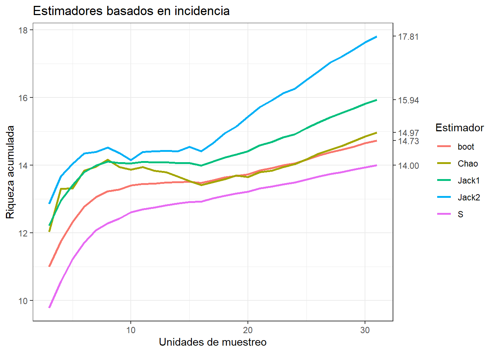
ggplot(abundance, aes(x=N, y=S, col= Estimador))+
geom_line(size=1)+
scale_y_continuous(sec.axis =
sec_axis(~ .,
breaks = abundance %>% filter(N==31) %>% pull(S)))+
labs(title = "Estimadores basados en abundancia",
y= "Riqueza acumulada",
x= "Unidades de muestreo")+
theme_bw()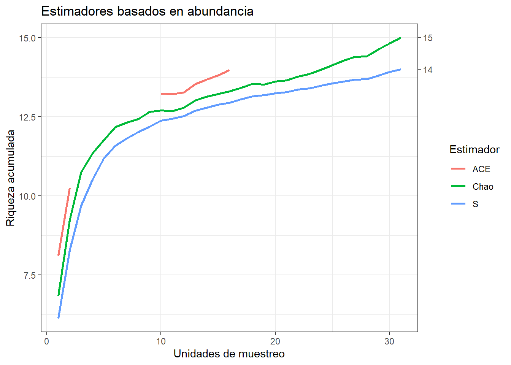
SpadeR
Ahora vamos a usar el paquete SpadeR creado por Anne Chao (Chao et al. 2016). Este paquete tiene una serie de funciones para estimar varios indices de diversidad y de riqueza, incluyendo algunos más recientes como iChao (Chiu et al. 2014). iChao básicamente incluye los tripletons y quadrupletons para mejorar la estimación de la riqueza.
Primero vamos a tener que ajustar nuestra base de datos al formato que requiere SpadeR: cada fila es una especie y una sola columna (por comunidad) donde van nuestras abundancias.
Spader_df <- ac_data %>% # Datos
t() %>% # Transponer los datos
as.data.frame() %>% # De nuevo a data.frame
rowSums() %>% #Sumar las abundancias
as.data.frame() %>% # De nuevo a data frame
rename(abun= ".") %>% # Nombre de la columna
arrange(desc(abun)) %>% # ordenar los valores
as.matrix() # Requiere formato de matriz
knitr::kable(Spader_df)| abun | |
|---|---|
| Sylvilagus floridanus | 486 |
| Odocoileus virginianus | 471 |
| Urocyon cinereoargenteus | 444 |
| Dicotyles angulatus | 155 |
| Conepatus leuconotus | 77 |
| Lynx rufus | 68 |
| Canis latrans | 45 |
| Mephitis macroura | 33 |
| Procyon lotor | 24 |
| Bassariscus astutus | 16 |
| Spilogale angustifrons | 13 |
| Nasua narica | 12 |
| Herpailurus yagouaroundi | 1 |
| Puma concolor | 1 |
Ahora si usamos la función de ChaoSpecies . NOTA: uso SpadeR:: para especificarle a R que llamo la función de dicho paquete. Ésto debido a que cuando cargas iNEXT en el mismo script la función puede generar conflictos
Spad_est <- SpadeR::ChaoSpecies(Spader_df,
datatype = "abundance")Warning: In this case, it can't estimate the variance of Homogeneous estimation Vamos a inspeccionar que hay dentro de el objeto que generamos.
Primero tenemos la tabla de información básica con el tamaño de la muestra, número de especies, cobertura de la muestra ( lo veremos en detalle en la sección de diversidad), el coeficiente de variación (CV). El CV te da una medida de la heterogeneidad de la abundancia de especies, donde 0 quiere decir que todas las especies tienen la mismas abundancias o la misma probabilidad de ser descubiertas. Toda la información detallada se puede encontrar en la guía del paquete en la página web de Anne Chao
knitr::kable(Spad_est[["Basic_data_information"]])| Variable | Value | |
|---|---|---|
| Sample size | n | 1846 |
| Number of observed species | D | 14 |
| Coverage estimate for entire dataset | C | 0.999 |
| CV for entire dataset | CV | 1.36 |
| Cut-off point | k | 10 |
| Number of observed individuals for rare group | n_rare | 2 |
| Number of observed species for rare group | D_rare | 2 |
| Estimate of the sample coverage for rare group | C_rare | 0 |
| Estimate of CV for rare group in ACE | CV_rare | 0 |
| Estimate of CV1 for rare group in ACE-1 | CV1_rare | 0 |
| Number of observed individuals for abundant group | n_abun | 1844 |
| Number of observed species for abundant group | D_abun | 12 |
Ahora veremos el otro objeto que contiene las estimaciones de varios índices y sus correspondientes intervalos de confianza.
Spd_rest <- Spad_est[["Species_table"]] %>%
as.data.frame() %>% # transformar a dataframe
rownames_to_column(var= "Indice") %>% # hacer columna
drop_na() # Quitar NAS del modelo heterogeneo
knitr::kable(Spd_rest, digits = 2)| Indice | Estimate | s.e. | 95%Lower | 95%Upper |
|---|---|---|---|---|
| Homogeneous (MLE) | 14 | 0.68 | 14.00 | 16.19 |
| Chao1 (Chao, 1984) | 15 | 2.29 | 14.07 | 28.17 |
| Chao1-bc | 15 | 2.29 | 14.07 | 28.17 |
| iChao1 (Chiu et al. 2014) | 15 | 2.29 | 14.07 | 28.17 |
| ACE (Chao & Lee, 1992) | 15 | 2.29 | 14.07 | 28.17 |
| ACE-1 (Chao & Lee, 1992) | 15 | 2.29 | 14.07 | 28.17 |
| 1st order jackknife | 16 | 2.00 | 14.39 | 24.22 |
| 2nd order jackknife | 18 | 3.46 | 14.92 | 31.32 |
Ahora veamoslo de manera gráfica
ggplot(Spd_rest, aes(x=Indice, y= Estimate,
ymin= `95%Lower`, ymax=`95%Upper`))+
geom_pointrange(aes(col=Indice), size= 1)+
geom_hline(yintercept = 14)+
labs(x= NULL,
y= "Riqueza de especies")+
coord_flip()+
theme_bw()+
theme(legend.position = "none")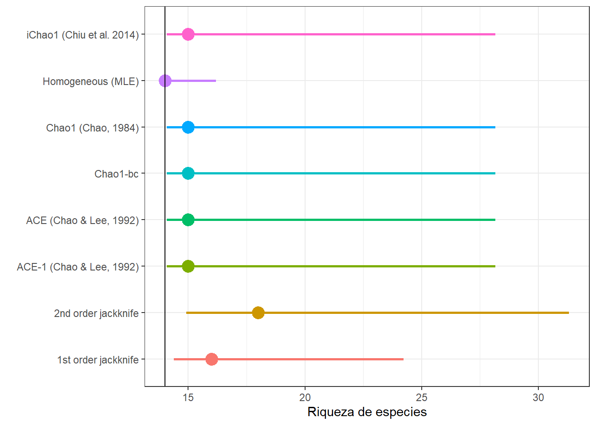
¿Con cuál indice deberíamos quedarnos? A través de simulaciones y pruebas se han dado cuenta que no hay un indice que funcione mejor que otros constantemente, pues su desempeño depende de los datos (Gwinn et al. 2015). Por ejemplo, los Jacknifes tienden a sobrestimar con tamaños de muestra grandes, pero a subestimar en datos con bajos esfuerzos de muestreo. Lo que parece pasar en nuestro data set (Chiu et al. 2014). Chao and Chiu (2016) también menciona que los estimadores Chao tienden a representar el intervalo menor de la riqueza “verdadera”, salvo cuando hay muy pocas especies raras. Cuando hay demasiadas especies raras los iChao tienden a tener mejores resultados dado que incluyen tripletons y quadrupletons(Chao and Colwell 2017; Pineda-López 2019).
Completitud de la muestra
Otra medida derivada de los estimadores no paramétricos es la de la completitud de la muestra. La completitud de la muestra nos da una medida de que tan completo es tu muestreo, basado en que a mayor esfuerzo menor número de singletons o doubletos. Al menos cuando yo aprendí de los estimadores de riqueza era una medida obligatoría de reportar y se calculaba así:
\[ Completitud= \frac{Sobs}{R_estimada} *100 \]
comple <- Spd_rest %>%
mutate(Completitud= (14/Estimate)*100) %>%
select(Indice, Estimate,Completitud)
knitr::kable(comple, digits = 2)| Indice | Estimate | Completitud |
|---|---|---|
| Homogeneous (MLE) | 14 | 100.00 |
| Chao1 (Chao, 1984) | 15 | 93.34 |
| Chao1-bc | 15 | 93.34 |
| iChao1 (Chiu et al. 2014) | 15 | 93.34 |
| ACE (Chao & Lee, 1992) | 15 | 93.34 |
| ACE-1 (Chao & Lee, 1992) | 15 | 93.34 |
| 1st order jackknife | 16 | 87.51 |
| 2nd order jackknife | 18 | 77.79 |
Algunos autores sugieren que un porcentaje de completitud mayor al 80% indica un muestreo representativo (Lobo 2008). Es importante no confundir la completitud del muestreo con la cobertura de la muestra. Esta última representa la proporción de la abundancia, mientras que como vimos la completitud se basa solo en el número de especies estimado vs el observado.
Curvas rango abundancia
En un principio hablamos que la diversidad tenia que ver con tres elementos: la riqueza, la abundancia y la composición (esta última no la veremos en detalle). Hasta ahora nos enfocamos en la riqueza y aunque evaluamos la influencia del número de individuos sobre ella, no hemos entrado en detalle sobre la estructura de la abundancia de cada entidad.
En una comunidad no todas las especies tienen el mismo “aporte”, es decir hay algunas que son muy “abundantes” y otras bastante “raras”. La estructura de la abundancia de las especies y su determinada pueden sugerir procesos ecológicos como disturbios, interacciones o capacidad de carga. Una de las maneras más sencillas de explorar el comportamiento de la estructura de la abundancia es mediante curvas rango-rango abundancia. En esta gráfica lo que hacemos es reankear las especies por su abundancia (o log de abundancia). Esto es relativamente sencillo de construir con la función rankabundance de BiodiversityR (Kindt and Coe 2005)
RA<-rankabundance(ac_data) %>% # Función de rango abundancia
as.data.frame() %>%
rownames_to_column(var= "Especies")ggplot(RA, aes(x=rank, y=logabun))+
geom_line(size= 1)+
geom_point(aes(col= Especies),size = 3)+
geom_text_repel(aes(label=Especies),
box.padding = 1,
colour= "black", angle=25,size= 3)+
theme_bw()+
labs(x = "rank", y = "log abundance", size= 14)+
theme(legend.position = "none")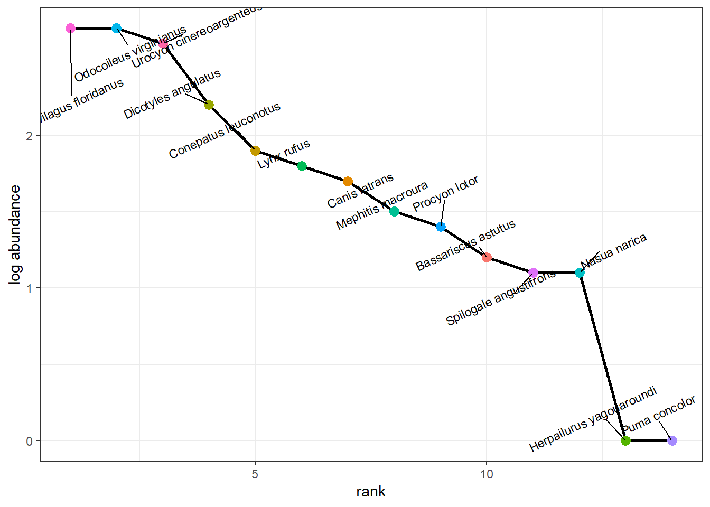
La pendiente de la curva nos dará una idea de que tan equitativa puede ser una comunidad: Una curva más aplanada nos dice que las especies tienden a tener abundancias similares (mayor equitatividad), mientras que una curva pronunciada probablemente se deba a unas cuantas especies muy dominantes.
Estimadores de diversidad
El índice de Shannon o Simpson (SIMPSON 1949; Sherwin et al. 2017), seguramente te suenen. Son quizás los indices más usados de diversidad (o entropía), incluso hasta una medida obligatoria en estudios de impacto ambiental de algunos países. A pesar de ser tan famosos y tan ampliamente usados estos indices tienen ciertos problemas (para los ecólogos) al momento de medir la diversidad.
- Las unidades de medida, ¿en qué unidades se presentan los indices? Cuando Shannon es igual a 1.3, es 1.3 diversidades? especies?. Pues resulta que los indices de entropía están dados en bits o nats (según el algoritmo (Cultid-Medina and Escobar 2019))
- El otro problema es el comportamiento de los índices de entropía no es conveniente para una medida de diversidad. Resulta que no responden proporcionalmente al aumento en la diversidad de una comunidad. Es decir: que una comunidad doblemente diversa, no tendrá el doble del valor del índice de Shannon o Simpson. Este punto es complejo porque invalida las comparaciones de comunidades por medio de éstos indices (Roswell, Dushoff, and Winfree 2021).
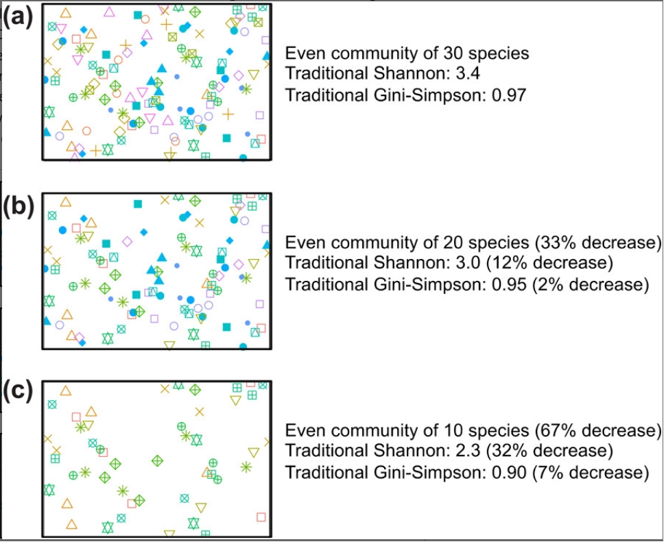
Éstas características fueron identificadas por MACARTHUR (1965) quien sugirió el exponencial de los índices como una medida del número efectivo de especies. Sugerencia que históricamente hemos olvidado y que fue señalado posteriormente por Jost (2006b) , quien propuso como tal el cálculo de la diversidad por medio del número efectivo de especies según la serie de Hill. Para detalles de las formulas y conceptos de la serie de Hill remítanse a la biografía citada.
Perfiles de diversidad y la cobertura de la muestra
Como ya lo vimos, la riqueza de especies es sensible a la abundancia e incluso el esfuerzo de muestreo. Pues tenemos la misma dificultad con los indices de diversidad. ¿De qué forma podemos comparar la diversidad de dos comunidades con diferente proporción de individuos muestreados? Para ello necesitamos del concepto de cobertura de la muestra (Sample coverage en inglés). La cobertura de la muestra nos da una medida de la proporción de abundancia de individuos que está representada en nuestro muestreo. Así, somos capaces de igualar el esfuerzo de muestreo lo valida las estimaciones y comparaciones con sentido ecológico (Cultid-Medina and Escobar 2019).
Para ver un ejemplo (mal ejemplo) de como usar la cobertura de la muestra vamos a usar el paquete iNEXT (Hsieh, Ma, and Chao 2022) desarrollado por Anne Chao. Para tener una comunidad con la que pueda comparar voy a generar una que sea simplemente una “sub-comunidad” de la que tenemos.
Vamos a calcular tres perfiles de diversidad siguiendo la notación de Jost (2006a)
\[ ^qD =(\sum_{i=1}^S p_i^q)^{1/(1-q)} \]
Donde \(p_i\) es la abundancia proporcional de la i-ésima especie, \(S\) el número de especies y \(q\) el orden de diversidad (Cultid-Medina and Escobar 2019).
q0= da peso a las especies raras o simplemente es la riqueza
q1= es el inverso de Shannon y corresponde a las especies igualmente abundantes. Es decir no hay mayor peso por raras o dominantes
q2= Equivale al inverso de Simpson y corresponde al número efectivo de especies más abundantes. Es decir que, pondera más por especies dominantes
# Valores aleatorios del uno a 31 para luego quitarlos de la base de datos
numbers <- sample(1:31, 16, replace= FALSE)
community2 <- ac_data %>%
slice(numbers) %>%
t() %>% # Transponer los datos
as.data.frame() %>% # De nuevo a data.frame
rowSums() %>% #Sumar las abundancias
as.data.frame() %>% # De nuevo a data frame
rename(abun= ".") %>% # Nombre de la columna
arrange(desc(abun)) %>% # ordenar los valores
as.matrix() # Requiere formato de matriz
# Ahora jutamos en un mismo dataframe
inext_DF <- data.frame(Spader_df, community2) %>%
rename(real= abun,
mitad= abun.1)
# Ahora corremos la función de iNEXT
inext_ob <- iNEXT(inext_DF,
q= c(0,1,2), # perfiles de diversidad
datatype = "abundance",
size = NULL, # Esfuerzo o unidades de estimación
endpoint = 1846,# espefificar el size final
knots = 100, #saltos donde estimará diversidad
se=TRUE, # Error estandar del boot
conf = 0.95, # Intervalos de confianza a
nboot = 50) # número de remuestreos.Tenemos un objeto lista con distinta información:
- La primera data base contiene información general con el número de individuos (n), las especies observadas (S.obs), la cobertura de la muestra (SC) y las frecuencias de especies (f1-f10). Nota en caso de usar datos de incidencia, este objeto tendrá la frecuencia de incidencia (Q1-Q10).
knitr::kable(inext_ob$DataInfo)| Assemblage | n | S.obs | SC | f1 | f2 | f3 | f4 | f5 | f6 | f7 | f8 | f9 | f10 |
|---|---|---|---|---|---|---|---|---|---|---|---|---|---|
| real | 1846 | 14 | 0.9989 | 2 | 0 | 0 | 0 | 0 | 0 | 0 | 0 | 0 | 0 |
| mitad | 1002 | 12 | 1.0000 | 0 | 0 | 0 | 0 | 1 | 1 | 0 | 1 | 0 | 0 |
- El segundo objeto tiene dos data bases: Uno basado en los individuos y otro en la cobertura de la muestra. El primero contiene el nombre de los ensamblajes, el corte donde se estima la diversidad con m número de individuos (m; el número de ms depende de los knots), método de rarefacción (inferior al observado), observado, extrapolación (mayor al observado): el perfil de diversidad 0,1,2 (order.q); el valor estimado de diversidad (qD); los intervalos de confianza de la estimación de diversidad (qD.LCL, qD.UCL ); la cobertura de la muestra estimada y sus intervalos de confianza (SC, SC.LCL, SC.UCL).
knitr::kable(head(inext_ob$iNextEst$size_based), digits = 2)| Assemblage | m | Method | Order.q | qD | qD.LCL | qD.UCL | SC | SC.LCL | SC.UCL |
|---|---|---|---|---|---|---|---|---|---|
| real | 1 | Rarefaction | 0 | 1.00 | 1.00 | 1.00 | 0.20 | 0.20 | 0.21 |
| real | 19 | Rarefaction | 0 | 6.17 | 5.97 | 6.38 | 0.89 | 0.88 | 0.89 |
| real | 38 | Rarefaction | 0 | 7.83 | 7.53 | 8.12 | 0.93 | 0.93 | 0.94 |
| real | 56 | Rarefaction | 0 | 8.80 | 8.44 | 9.16 | 0.96 | 0.95 | 0.96 |
| real | 75 | Rarefaction | 0 | 9.51 | 9.11 | 9.91 | 0.97 | 0.97 | 0.97 |
| real | 94 | Rarefaction | 0 | 10.04 | 9.61 | 10.47 | 0.98 | 0.97 | 0.98 |
La segunda base es muy similar pero es usada para graficar la curva de cobertura de la muestra
knitr::kable(head(inext_ob$iNextEst$coverage_based), digits = 2)| Assemblage | SC | m | Method | Order.q | qD | qD.LCL | qD.UCL |
|---|---|---|---|---|---|---|---|
| real | 0.20 | 1 | Rarefaction | 0 | 1.00 | 0.99 | 1.01 |
| real | 0.89 | 19 | Rarefaction | 0 | 6.17 | 5.79 | 6.56 |
| real | 0.93 | 38 | Rarefaction | 0 | 7.83 | 7.34 | 8.31 |
| real | 0.96 | 56 | Rarefaction | 0 | 8.80 | 8.28 | 9.32 |
| real | 0.97 | 75 | Rarefaction | 0 | 9.51 | 8.98 | 10.05 |
| real | 0.98 | 94 | Rarefaction | 0 | 10.04 | 9.50 | 10.58 |
El último objeto muestra la diversidad observada y estimada mediante estimadores asintóticos. Recordemos que q=0 es la riqueza, q=1 es Inverso de Shanon y q=2 el inverso de Simpson (Chao et al. 2014).
knitr::kable(inext_ob$AsyEst, digits = 2)Assemblage Diversity Observed Estimator s.e. LCL UCL mitad Species richness 12.00 12.00 0.11 12.00 12.22 mitad Shannon diversity 5.98 6.01 0.17 5.68 6.34 mitad Simpson diversity 4.67 4.69 0.12 4.44 4.93 real Species richness 14.00 15.00 0.29 14.42 15.57 real Shannon diversity 6.30 6.33 0.15 6.04 6.62 real Simpson diversity 4.91 4.92 0.11 4.70 5.15
iNext tiene funciones para graficar los perfiles muy poderosas y que usan ggplot como base. Esto último permite usar funciones de ggplot para modificar las imágenes.
El gráfico de tipo 1 corresponde a la curva basada en individuos. Muy similar a lo que ya vimos con la curva de rarefacción basada en individuos. Como ven, la linea punteada corresponde a los valores extrapolados de la comunidad que inventamos. A pesar que parece una gráfica sencilla, tiene mucho por decir: Por ejemplo, la mágnitud en que difiere cada uno de los indices nos habla de la equitatividad de la comunidad. Así, un q0 muy cercano a q1 nos habla de una comunidad poco equitativa.
ggiNEXT(inext_ob, # objeto iNEXT
type = 1, # tipo de gráfica
se= T, # incluir intervalos
facet.var = "Assemblage", # Cuadros por comunidad
color.var = "None", # definir color
grey = FALSE)+ # En grises
theme_bw() # Tema de ggplot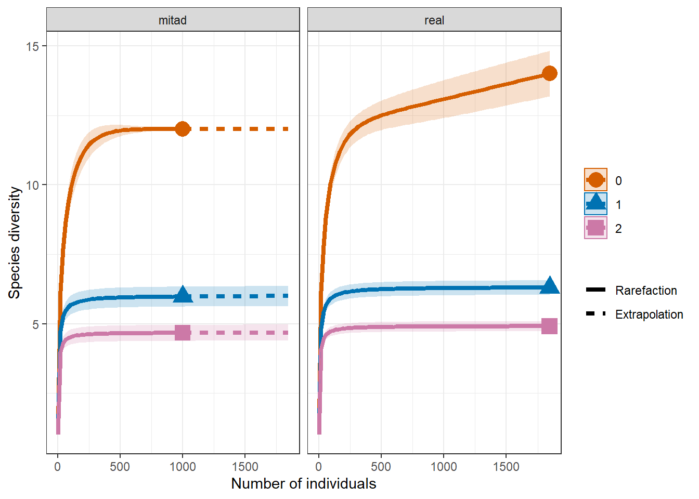
Dependiendo de lo que nos interese mostrar podemos variar la especificación de la curva. Por ejemplo, queremos comparar los perfiles de diversidad de las dos comunidades
ggiNEXT(inext_ob, # objeto iNEXT
type = 1, # tipo de gráfica
se= T, # incluir intervalos
facet.var = "Order.q", # Cuadros por perfil
color.var = "Assemblage", # definir color
grey = FALSE)+ # En grises
theme_bw() # Tema de ggplot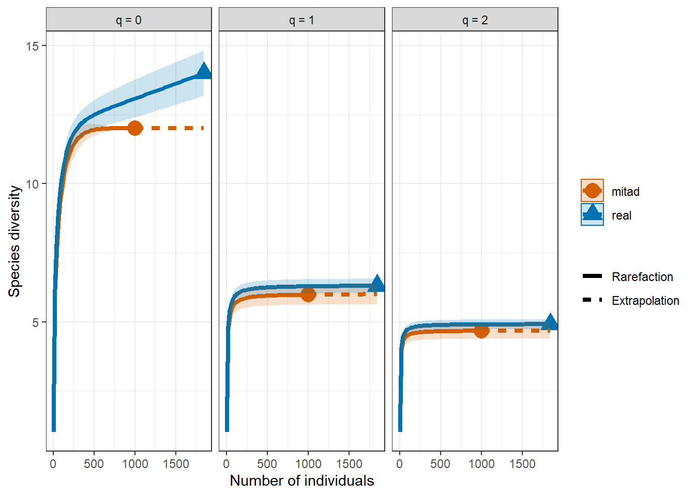
Podemos observar el comportamiento de cobertura de la muestra con el gráfico tipo dos. Este punto es importante, porque la comparación de las comunidades solo tiene sentido cuando ambas tienen una cobertura de la muestra equivalente. En este caso ambas comunidades tienen coberturas muy similares por lo que se valida su comparación. En caso de tener una comunidad con menor cobertura es necesario extrapolar o interpolar con base en la cobertura. Un protocolo detallado para la comparación válida puede encontrarse en Cultid-Medina and Escobar (2019).
ggiNEXT(inext_ob,
type=2,
facet.var="None",
color.var="Assemblage")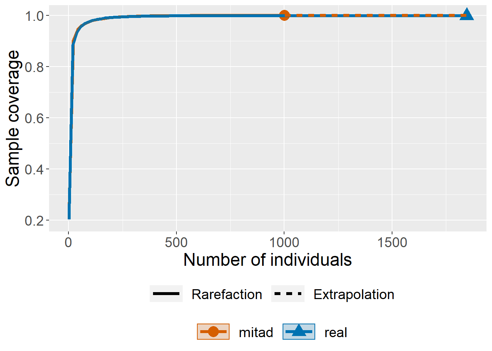
ggiNEXT(inext_ob,
type=3,
facet.var="Assemblage")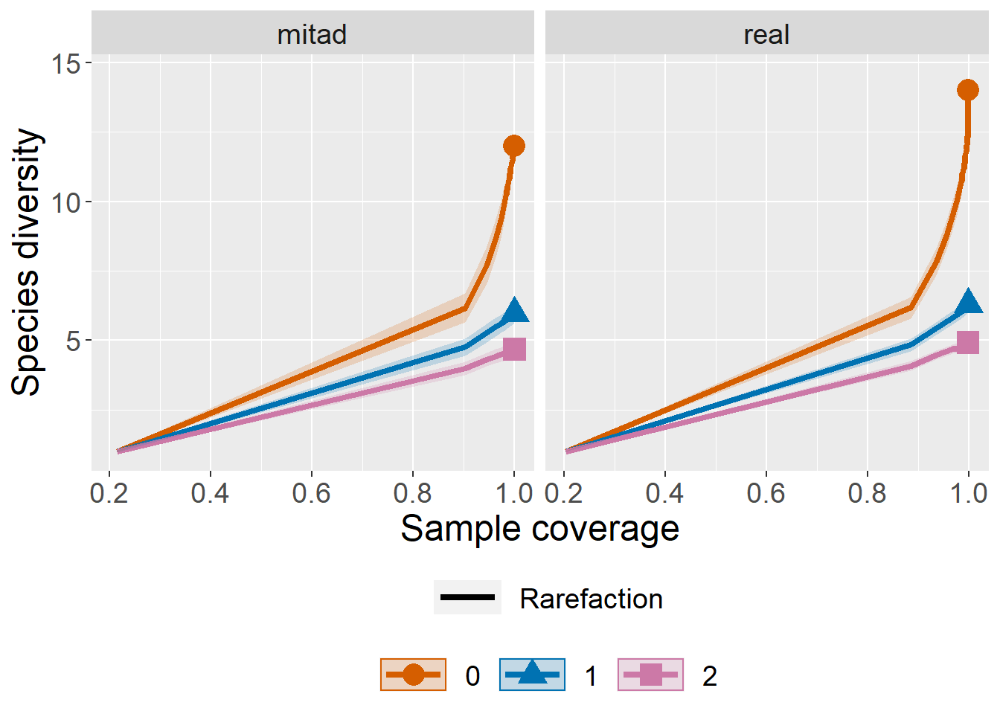
ggiNEXT(inext_ob,
type=3,
facet.var="Order.q",
color.var="Assemblage")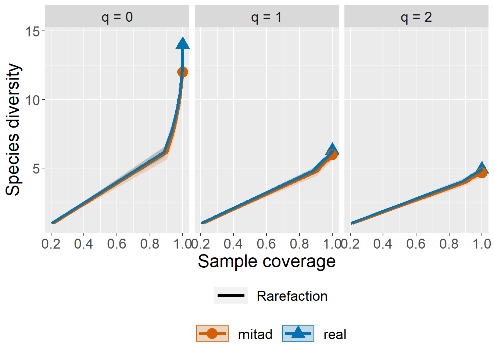
Modelando la variación de la diversidad
En ocasiones nos interesa más conocer que factores influyen sobre la diversidad. En este caso lo que importa la variación observada en cada unidad de muestreo. En nuestro caso, la unidad de muestreo son las cámaras trampa.
En este caso vamos a usar el paquete HillR (Li 2018), la cual tiene funciones mucho más sencillas para estimar los perfiles de diversidad. También cabe resaltar que tiene muchas otras funciones para calcular diversidad funcional y filogenética, pero en este caso solo nos interesa la diversidad taxonómica.
Para usar la función de hill_taxa requerimos la base de datos donde las filas son los sitios y las columnas las especies. Afortunadamente, ya tenemos una base así guardada en el objeto ac_data
# Cálculo de cada perfil de diversidad
q0 <- hill_taxa(ac_data,q= 0)
q1 <- hill_taxa(ac_data, q=1)
q2 <- hill_taxa(ac_data, q=2)
# Unimos todo en una sola data.frame
div <- data.frame(q0=q0, q1=q1, q2=q2)
knitr::kable(head(div), digits = 2)| q0 | q1 | q2 | |
|---|---|---|---|
| CBG01 | 1 | 1.00 | 1.00 |
| CBG02 | 2 | 1.57 | 1.38 |
| CBG03 | 2 | 1.89 | 1.80 |
| CBG04 | 5 | 1.52 | 1.20 |
| CBG05 | 3 | 2.36 | 2.05 |
| CBG06 | 9 | 3.53 | 2.73 |
Ahora cargamos unas covariables y las unimos a nuestra base para modelar
scale_this <- function(x){result <- as.vector(scale(x))}
covs <- read_delim("Data/selectedcov_nostd190821.csv",
delim = ";") %>%
mutate_if(is.numeric, scale_this) Rows: 31 Columns: 12
-- Column specification --------------------------------------------------------
Delimiter: ";"
chr (3): Station, Cam, Habitat
dbl (9): utm_y, utm_x, Vertcover_50, Dcrops, MSAVI, Slope, Cluster, Effort, ...
i Use `spec()` to retrieve the full column specification for this data.
i Specify the column types or set `show_col_types = FALSE` to quiet this message.div_covs <- cbind(div, covs)
knitr::kable(head(div_covs), digits = 2)| q0 | q1 | q2 | Station | utm_y | utm_x | Vertcover_50 | Cam | Dcrops | MSAVI | Slope | Cluster | Effort | Dpop_G | Habitat | |
|---|---|---|---|---|---|---|---|---|---|---|---|---|---|---|---|
| CBG01 | 1 | 1.00 | 1.00 | CBG01 | -0.32 | 1.86 | -0.52 | MoultrieA30 | 0.34 | 0.97 | 0.08 | -0.84 | 0.32 | -1.01 | Scrub |
| CBG02 | 2 | 1.57 | 1.38 | CBG02 | 0.18 | 1.54 | 0.62 | Moultrie | 1.24 | -0.59 | -1.08 | -0.84 | -1.40 | -0.83 | Scrub |
| CBG03 | 2 | 1.89 | 1.80 | CBG03 | 0.94 | 1.35 | -0.98 | MoultrieA30 | 2.11 | -0.31 | -1.13 | -0.84 | 0.50 | -0.60 | Scrub |
| CBG04 | 5 | 1.52 | 1.20 | CBG04 | 1.49 | 1.16 | -0.98 | Primos | 0.10 | 0.12 | 2.55 | -0.84 | -0.61 | -0.62 | Columnar |
| CBG05 | 3 | 2.36 | 2.05 | CBG05 | 1.83 | 0.77 | -1.21 | MoultrieA30 | 0.91 | 0.47 | 0.32 | -0.84 | 0.50 | -0.45 | Scrub |
| CBG06 | 9 | 3.53 | 2.73 | CBG06 | -0.61 | 1.45 | 0.62 | Primos | 1.75 | 0.77 | -1.13 | -0.84 | 0.50 | -0.24 | Scrub |
Vamos a realizar una selección de modelos de manera rápida usando la función dredge del paquete MuMIn (Barton 2020).
Primero para q0
global_q0 <- glm(q0~ Dcrops+ MSAVI+ Slope+ Dpop_G+ Habitat,
family = "poisson",
data = div_covs,
na.action = "na.fail")
AIC_q0 <- dredge(global_q0,
m.lim = c(NA, 1),
rank = "AIC")Fixed term is "(Intercept)"knitr::kable(AIC_q0, digits = 2)| (Intercept) | Dcrops | Dpop_G | Habitat | MSAVI | Slope | df | logLik | AIC | delta | weight | |
|---|---|---|---|---|---|---|---|---|---|---|---|
| 2 | 1.80 | -0.12 | NA | NA | NA | NA | 2 | -71.47 | 146.93 | 0.00 | 0.29190233 |
| 1 | 1.80 | NA | NA | NA | NA | NA | 1 | -72.73 | 147.45 | 0.52 | 0.22506372 |
| 5 | 1.92 | NA | NA | + | NA | NA | 2 | -71.94 | 147.88 | 0.95 | 0.18153140 |
| 3 | 1.80 | NA | 0.07 | NA | NA | NA | 2 | -72.30 | 148.61 | 1.67 | 0.12642361 |
| 17 | 1.80 | NA | NA | NA | NA | 0.03 | 2 | -72.62 | 149.25 | 2.31 | 0.09179617 |
| 9 | 1.80 | NA | NA | NA | -0.01 | NA | 2 | -72.72 | 149.44 | 2.51 | 0.08328277 |
El AIC nos muestra que el mejor modelo es aquel donde la distancia a cultivos es la variable que mejor explica la riqueza de especies, con un coeficiente negativo. Es decir que a mayor distancia a cultivos, menor cantidad de especies. Es importante darse cuenta que según los valores del AIC el modelo sin ninguna covariable es igualmente plausible. Esto nos empieza a dar señales de que posiblemente las covariables no sea muy importantes para explicar la riqueza de especies.
q0_pred <- ggeffect(get.models(AIC_q0,
subset = 1)[[1]],
terms = "Dcrops")
plot(q0_pred, add.data = TRUE)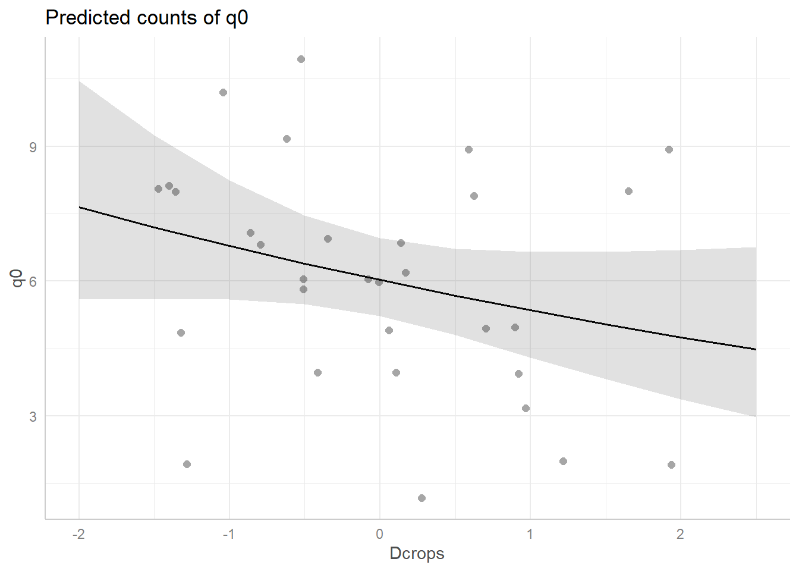
testDispersion(get.models(AIC_q0,
subset = 1)[[1]],
alternative = "greater") # para sobredispersión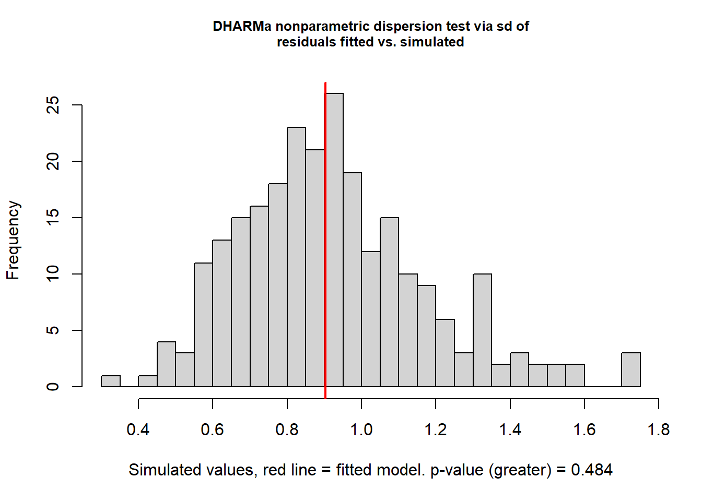
DHARMa nonparametric dispersion test via sd of residuals fitted vs.
simulated
data: simulationOutput
dispersion = 0.98029, p-value = 0.484
alternative hypothesis: greaterParece un buen modelo, pero como recordaran me inventé las covariables así que es una coincidencia o un ejemplo de porque hay que tener cuidado incluso con las pruebas de bondad de ajuste.
Ahora para q1
global_q1 <- lm(q1~ Dcrops+ MSAVI+ Slope+ Dpop_G+ Habitat,
data = div_covs,
na.action = "na.fail")
AIC_q1 <- dredge(global_q1,
m.lim = c(NA, 1),
rank = "AIC")Fixed term is "(Intercept)"knitr::kable(AIC_q0, digits = 1)| (Intercept) | Dcrops | Dpop_G | Habitat | MSAVI | Slope | df | logLik | AIC | delta | weight | |
|---|---|---|---|---|---|---|---|---|---|---|---|
| 2 | 1.8 | -0.1 | NA | NA | NA | NA | 2 | -71.5 | 146.9 | 0.0 | 0.29190233 |
| 1 | 1.8 | NA | NA | NA | NA | NA | 1 | -72.7 | 147.5 | 0.5 | 0.22506372 |
| 5 | 1.9 | NA | NA | + | NA | NA | 2 | -71.9 | 147.9 | 0.9 | 0.18153140 |
| 3 | 1.8 | NA | 0.1 | NA | NA | NA | 2 | -72.3 | 148.6 | 1.7 | 0.12642361 |
| 17 | 1.8 | NA | NA | NA | NA | 0 | 2 | -72.6 | 149.2 | 2.3 | 0.09179617 |
| 9 | 1.8 | NA | NA | NA | 0 | NA | 2 | -72.7 | 149.4 | 2.5 | 0.08328277 |
En este caso el modelo sin covariables es el mejor
check_model(get.models(AIC_q1,
subset = 1)[[1]],
check = c("qq", "normality"))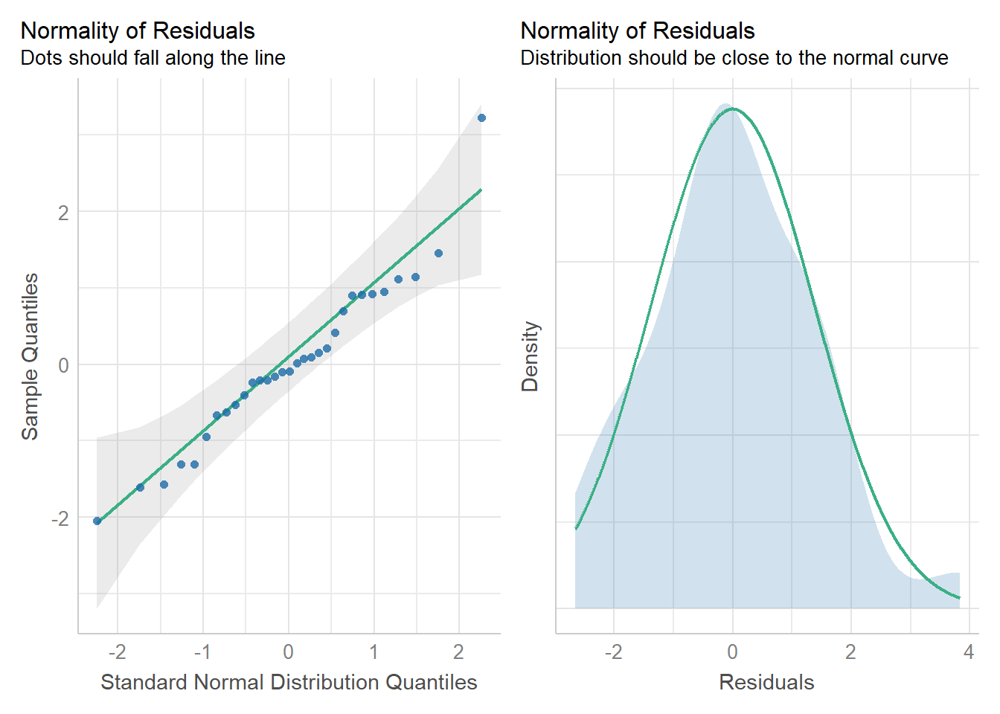
Parece ser un buen modelo.
Ya tienen las habilidades necesarias para intentar modelar q2
Final
Lo lograste, llegaste hasta el final. Hoy vimos muchos conceptos de diversidad y funciones de R de manera muy rápida, así que es normal que te sientas abrumado. El objetivo de este tutorial es solo el de darte las herramientas para que cuando te enfrentes a R y a tus datos, tengas una idea de como sobrevivir. Recuerda que esta es una introducción rápida, por lo que hay aspectos conceptuales de la diversidad vimos de manera muy somera. Depende de ti el seguir investigando y afilar tus conocimientos. Hoy en día tenemos la fortuna de tener libros muy buenos escritos en español sobre diferentes aspectos de la diversidad (C. E. Moreno 2019). Por supuesto, los clásicos también son muy importantes para seguir iluminándote (Magurran 2013). Finalmente, artículos cómo el de Roswell, Dushoff, and Winfree (2021) sintetizan en forma de guía los conceptos clave para estimar diversidad son de mucha ayuda.
References
Barton, Kamil. 2020. “MuMIn: Multi-Model Inference.” https://CRAN.R-project.org/package=MuMIn.
Chao, Anne, and Chun-Huo Chiu. 2016. “Nonparametric Estimation and Comparison of Species Richness.” eLS, May, 1–11. https://doi.org/10.1002/9780470015902.a0026329.
Chao, Anne, and Robert K. Colwell. 2017. “Thirty years of progeny from Chao’s inequality: Estimating and comparing richness with incidence data and incomplete sampling.” SORT-Statistics and Operations Research Transactions 41 (1): 3–54. https://raco.cat/index.php/SORT/article/view/326047.
Chao, Anne, Nicholas J Gotelli, TC Hsieh, Elizabeth L Sander, KH Ma, Robert K Colwell, and Aaron M Ellison. 2014. “Rarefaction and Extrapolation with Hill Numbers: A Framework for Sampling and Estimation in Species Diversity Studies.” Ecological Monographs 84 (1): 45–67.
Chao, Anne, and Lou Jost. 2012. “Coverage-Based Rarefaction and Extrapolation: Standardizing Samples by Completeness Rather Than Size.” Ecology 93 (12): 2533–47.
Chao, Anne, K. H. Ma, T. C. Hsieh, and Chun-Huo Chiu. 2016. “SpadeR: Species-Richness Prediction and Diversity Estimation with r.” https://CRAN.R-project.org/package=SpadeR.
Chiu, Chun-Huo, Yi-Ting Wang, Bruno A. Walther, and Anne Chao. 2014. “An Improved Nonparametric Lower Bound of Species Richness via a Modified Good-Turing Frequency Formula.” Biometrics 70 (3): 671–82. https://doi.org/10.1111/biom.12200.
Cultid-Medina, CA, and F Escobar. 2019. “Pautas Para La Estimación y Comparación Estadística de La Diversidad Biológica (qD).” In. Ciudad de México: Universidad Autónoma del Estado de Hidalgo/ Libermex.
Good, I. J. 1953. “The Population Frequencies of Species and the Estimation of Population Parameters.” Biometrika 40 (3/4): 237. https://doi.org/10.2307/2333344.
Gotelli, Nicholas J, and Robert K Colwell. 2011. “Estimating Species Richness.” In, edited by Anne E Magurran and Brian J. McGill, 39–54. NewYork: Oxford University Press.
Gwinn, Daniel C., Michael S. Allen, Kimberly I. Bonvechio, Mark V. Hoyer, and Leah S. Beesley. 2015. “Evaluating Estimators of Species Richness: The Importance of Considering Statistical Error Rates.” Edited by Robert B. O’Hara. Methods in Ecology and Evolution 7 (3): 294–302. https://doi.org/10.1111/2041-210x.12462.
Hsieh, T. C., K. H. Ma, and Anne Chao. 2022. “iNEXT: Interpolation and Extrapolation for Species Diversity.” http://chao.stat.nthu.edu.tw/wordpress/software_download/.
Jost, Lou. 2006a. “Entropy and Diversity.” Oikos 113 (2): 363–75.
———. 2006b. “Entropy and Diversity.” Oikos 113 (2): 363–75.
Kays, Roland, Brian S Arbogast, Megan Baker-Whatton, Chris Beirne, Hailey M Boone, Mark Bowler, Santiago F Burneo, Michael V Cove, Ping Ding, and Santiago Espinosa. 2020. “An Empirical Evaluation of Camera Trap Study Design: How Many, How Long, and When?” Methods in Ecology and Evolution 11: 700–713. https://doi.org/10.1111/2041-210X.13370.
Kindt, R., and R. Coe. 2005. “Tree Diversity Analysis. A Manual and Software for Common Statistical Methods for Ecological and Biodiversity Studies.” http://www.worldagroforestry.org/output/tree-diversity-analysis.
Li, Daijiang. 2018. “hillR: Taxonomic, Functional, and Phylogenetic Diversity and Similarity Through Hill Numbers” 3: 1041. https://doi.org/10.21105/joss.01041.
Lobo, Jorge M. 2008. “Database Records as a Surrogate for Sampling Effort Provide Higher Species Richness Estimations.” Biodiversity and Conservation 17 (4): 873–81. https://doi.org/10.1007/s10531-008-9333-4.
MACARTHUR, ROBERT H. 1965. “PATTERNS OF SPECIES DIVERSITY.” Biological Reviews 40 (4): 510–33. https://doi.org/10.1111/j.1469-185x.1965.tb00815.x.
Magurran, Anne E. 2013. Measuring Biological Diversity. John Wiley & Sons.
Moreno, Claudia. 2001. Métodos Para Medir La Biodiversidad. Vol. 1. M&T Manuales y Tesis SEA.
Moreno, Claudia E. 2019. La biodiversidad en un mundo cambiante: fundamentos teóricos y metodológicos para su estudio. Universidad Autónoma del Estado de Hidalgo.
Oksanen, Jari, F. Guillaume Blanchet, Michael Friendly, Roeland Kindt, Pierre Legendre, Dan McGlinn, Peter R. Minchin, et al. 2020. “Vegan: Community Ecology Package.” https://CRAN.R-project.org/package=vegan.
Pineda-López, R. 2019. “Estimadores de La Riqueza de Especies.” In, edited by CE Moreno, 159–74. Ciudad de México: Universidad Autónoma del Estado de Hidalgo/Libermex.
Roswell, Michael, Jonathan Dushoff, and Rachael Winfree. 2021. “A Conceptual Guide to Measuring Species Diversity.” Oikos 130 (3): 321–38. https://doi.org/10.1111/oik.07202.
Sherwin, W. B., A. Chao, L. Jost, and P. E. Smouse. 2017. “Information Theory Broadens the Spectrum of Molecular Ecology and Evolution.” Trends in Ecology & Evolution 32 (12): 948–63. https://doi.org/10.1016/j.tree.2017.09.012.
SIMPSON, E. H. 1949. “Measurement of Diversity.” Nature 163 (4148): 688–88. https://doi.org/10.1038/163688a0.